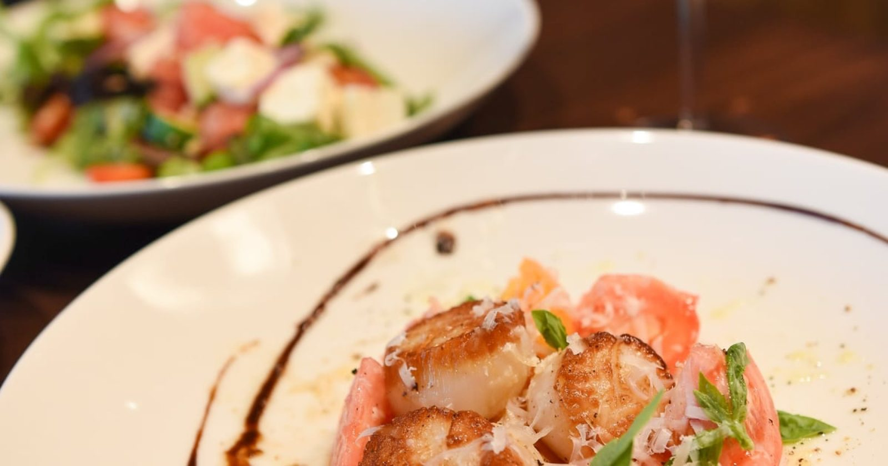
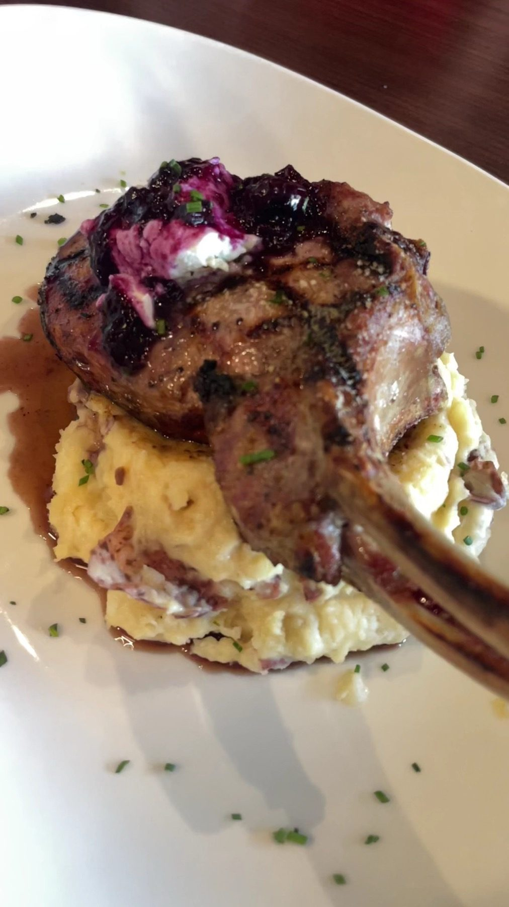

Starters
Scallop caprese, chicken lollipop, crab cakes and bikini prawns.
The Blu Halo · Gulfport
The Blu Halo St Pete serves Gulfport from St. Petersburg.
Coming from Gulfport? The Blu Halo St Pete is in St. Petersburg, in the Carillon area. Lunch, dinner, cocktails and live music.
Lunch and dinner
Plates made from fresh ingredients.

Scallop caprese, chicken lollipop, crab cakes and bikini prawns.

Business lunches in the Carillon area, with the full starter list.

Ahi tuna poke, smoked meatball pomodoro and plated entrees, plus live music evenings.
4.7 ★ · 303 Google reviews
Anthony facilitated one of the most amazing meals that I've ever had. I'm not saying that lightly. The drinks were absolutely amazing. A seasoned mixologist would be embarrassed of what they put out during a rush. The scallop caprese app was amazing. No notes. The grouper was absolutely sublime. I did not know fish could be that tender. Along with their signature potato was sincerely something to write home about.
If you think you know what a pastrami sandwich should taste like, The Blu Halo is here to completely elevate the bar. Their Wagyu Hot Pastrami is nothing short of a masterpiece. Instead of your standard deli meat, they use premium Wagyu pastrami that is impossibly tender, rich, and melt-in-your-mouth juicy.
Tried Blu Halo this week and really enjoyed it. We started with the Chicken Lollipop appetizer, which was one of the highlights of the meal. Great flavor with just the right balance of sweet and spicy. For entrées, we ordered the Blu Halo Chop and the Smash Burger. The pork chop was cooked perfectly, and the blueberry chutney with goat cheese was a surprisingly great combination.
First visit and we went for the before 6:30 priix fixe meal for 2, 1 appetizer, 2 salads/soup, 2 entrees, shared dessert, each course was creative and delicious. The ambiance was trendy and upscale, the live music was good too. Tyler was our waiter and he was cheerful, accommodating and gave us excellent advice for the different choices for our meal. Starter was beef tips, which we really enjoyed.
We had a great experience dining at Blu Halo for the first time. We were seated promptly after sharing our reservation name. The restaurant was modern and updated, having only been open since July 2025. The waitress also came over quickly and introduced herself and took drink orders. Service was great throughout our meal.